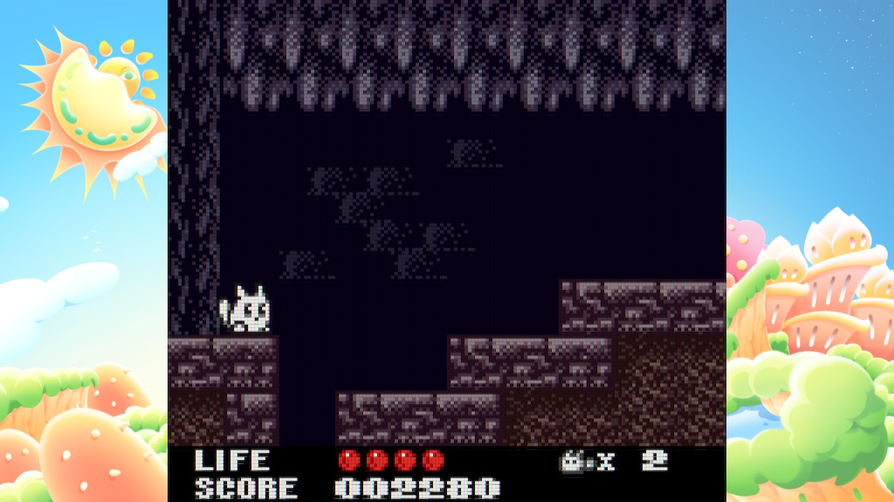
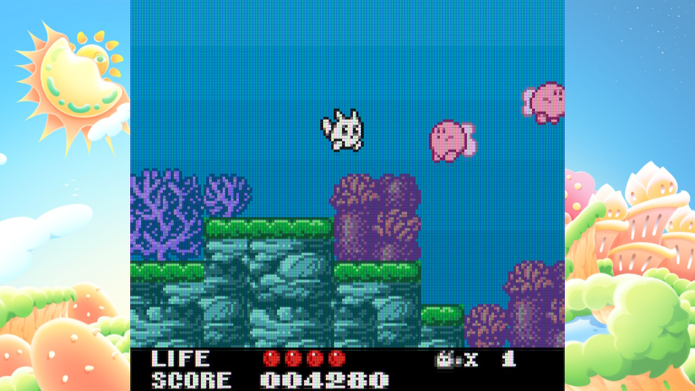
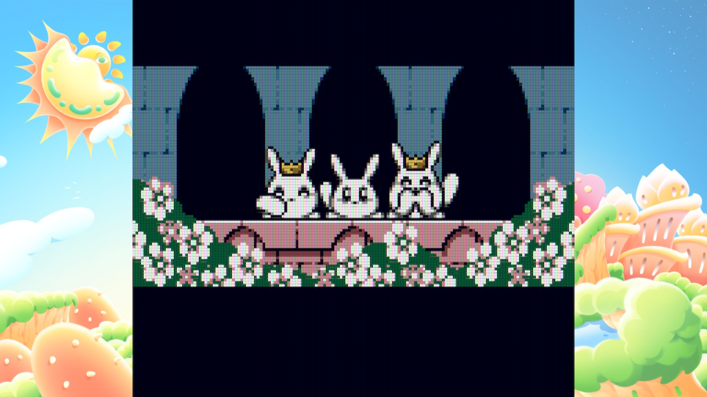

Trip World DX (Nintendo Switch)
I believe I first learned about Trip World from Hardcore Gaming 101, after discovering and playing through Gimmick! in the early 2010s. I was glad to know that there was another game with similar vibes to Gimmick, even if the gameplay was radically different. I heard that this Trip World game was available on the Nintendo 3DS eShop, and added it to my "games to play when I get a 3DS" list.
The year is 2026. The 3DS eShop has been dead for years. I never bought Trip World. (And actually I still haven't played or finished many of those "games to play when I get a 3DS" games...) But lately I've been wanting to play smaller, more handheld experiences. Part of this just comes down to living with my partner now. She's been playing through Hollow Knight on the television lately, so I've been wanting more bite-sized experiences to play on a handheld so we can "parallel play" together.
On a whim, I decided to see if that Trip World game had been re-released on the Nintendo Switch. And I found that it was! And it's now available in color! I downloaded it and decided to play through it the other day instead of just doomscrolling on my phone.

Trip World is an easy platformer where most enemies don't actually attack you. If this sounds boring... it's because it kind of is. In theory, I'm not opposed to a game about exploring a mysterious world with all kinds of strange inhabitants that mostly can't actually hurt you. I'm a fan of Yume Niki after all. But Trip World doesn't offer much intrigue and is clearly designed like a traditional platformer. Plus there are occasional enemies and hazards that do pose a threat to you, so I felt discouraged from sniffing the roses and mostly trudged onwards without interacting with enemies.
The game is also pretty short; I was able to beat it in an hour and that was after getting multiple game overs, which require you to start from the beginning again (though I learned after beating the game that there's a level select code on the title screen...). There is some amount of replayability; there are some alternate paths in levels and some experimentation you can do (trying out all the fruit powerups, going for a "genocide run", high scores, etc). But it's still a pretty tiny game.
The DX release on modern platforms adds the usual bonus features you'd expect with a retro game rerelease like this; the standard gallery full of production materials, manual scans, interviews, a music player, etc. This rerelease's main bonus feature is the ability to play the game in color. While these are all welcome, I think because the game is so short and simple, these bonus features all feel... less substantial. Being able to see all the planning documents for the game is neat in theory but the game just doesn't stick around long enough for this to be rewarding. Playing the game in color is cool... but again, the game is so short that it's not that transformative.
I also feel like a misstep with this DX rerelease comes with in-game instructions. The rerelease doesn't provide you with a list of game controls. This doesn't sound like too much of an issue, but a key mechanic of the game is the ability to transform Yacopu using a button combination that is never spelled out to you in the game. I only learned of this from reading the in-game manual... which is only available in Japanese or German! Thankfully I knew enough Japanese to be able to read the part of the manual that explained the transformation mechanic, but if I didn't know this I would have played through the whole game without knowing you could transform!

Now despite having a seemingly endless list of complaints, I think that the overall game is still a pretty charming experience. So much so that I'd recommend the base Trip World game if you have something like an Analogue Pocket or Game Boy Everdrive. It's a pretty chill time, and if you want a short, easy, and unique game to play, this game's way better than an hour of doomscrolling. The music and graphics are pretty nice, and I think this game probably shines on a dedicated handheld like the original Game Boy.
But the DX release on modern platforms? It's 20 U.S. dollars. I cannot recommend it for that price, given how short the game is. I'm actually a fan of shorter games, but this game is just too short, linear, and simple to be worth $20 even when you count all the bonus materials. If it were $5 I'd maybe recommend it. Otherwise, I suggest you "obtain" a ROM of the original game and play it on a dedicated handheld.

Final Rating: 2/7 - It has a few redeeming qualities but is otherwise weak
Recipient of the "I would have loved this more as a kid" Award!
Back to Media Log